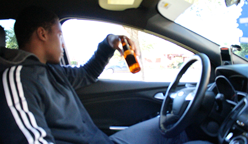

Drinking and Driving

Drinking and driving is problem that has been around for ages that has caused more problems on the road than any other form of distracted driving. The majority of traffic and automobile deaths are caused by drunk driving and drinking and driving. Studies have shown that people with a BAC level of .01 (.07 less than the legal limit) are nearly 50% more likely to be the cause of accidents than those that are sober in the other car. Though the percent of drunk drivers on the road has gone down tremendously, it is still not at the level that it should be; 0%. Be a major help, save some lives! Do not drink and drive.